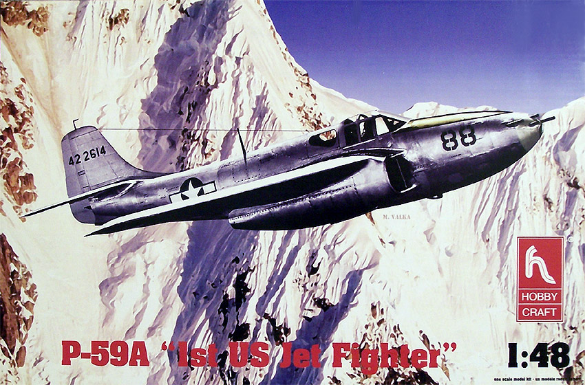
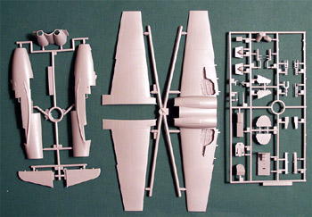
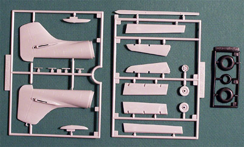
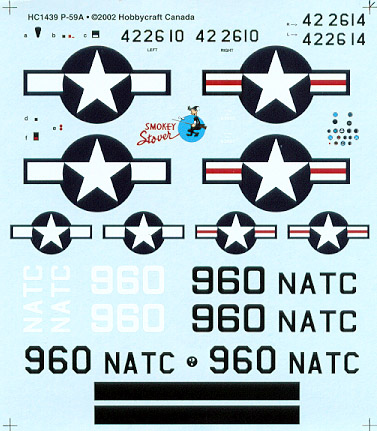
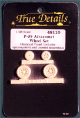
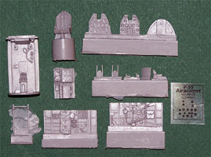

{kind=link}
{kind=link}
{kind=link}
{kind=link}
{kind=link}


Hobby Craft 1/48 P-59A Airacomet

Kit #1439
MSRP $27.98
Images and text Copyright � 2005 by Matt Swan
Developmental Background
In April of 1941, Major-General H. H. Arnold paid a visit to Britain. While there, he was shown the top-secret Gloster E-28/39 jet-powered aircraft, powered by one of Wing Commander Frank Whittle's W2B centrifugal turbojets. General Arnold was so impressed by the potentiality of this new technology that he immediately asked if American engineers could be given the blueprints of the new jet engine so that they could manufacture it under license in the USA. Since the US government was being so generous with its Lend-Lease aid to Britain, the RAF readily agreed.
The USA was clearly behind other major aircraft manufacturing nations in this revolutionary new form of aircraft propulsion.
The P-59A project was conducted under the utmost secrecy, with Bell building the airplane and General Electric the engine. The first P-59 was completed in mid-1942 and on October 1, 1942, it made its initial flight at Muroc Dry Lake California. The aircraft that emerged was relatively conventional. It had straight wings mounted about mid-height on the fuselage. A high T-tail ensured that the tail would not interfere with the airflow from the engines. Not having an engine in the nose allowed the front landing gear to retract into the nose, which also housed the proposed guns and ammunition. The engines, producing 1400 pounds of thrust each, were housed in pods under the wings adjacent to the fuselage. One year later, the airplane was ordered into production, to be powered by I-14 and I-16 engines, improved versions of the original I-A.
Although the airplane's performance was not spectacular and it never got into combat, the P-59 provided training for AAF personnel and invaluable data for subsequent development of higher performance jet airplanes. In the end, 66 Airacomets were built including 3 XP-59A, 13 YP-59A, 20 P-59A, and 30 P-59B. The Airacomet was not well known by the public, and it rapidly faded from memory. Only six Airacomets still exist in museums.
The Kit
In 2002 Hobby Craft stepped up to the plate and presented the first descent and affordably priced 1/48 scale model kit of the Bell Airacomet that the market has seen. The kit comes to us in a heavy-duty corrugated cardboard box that opens from the end rather than with a lift off top. Personally, I feel this is a handicap to any kit as the modeler does not have a good place to store parts during construction and I feel it increases the chances of losing small parts between the time of purchase and the time of construction. Inside the box, the five main sprues are all individually packaged in poly bags. There is little opportunity for shipping damage because of abrasion here.
An unusual aspect of the parts is immediately apparent, the fuselage is cast if four smaller primary pieces rather than two large halves. The instructions indicate that the front sections should be assembled then the tail and then the two subassemblies be connected. It seems to me that you would get a better result if the sides were completed then assembled in a conventional manner. While all the exterior parts display crisp, finely engraved panel lines they also have a slightly dull look that appears to be the result of a very fine texture in the plastic. The �B� sides all have a shiny appearance. I do not know if this will present a problem in achieving a good paint finish or not. Flaps, ailerons and elevators are all included as separate pieces but the rudder is molded in the neutral position.
The cockpit is somewhat plain with no serious detail. There are no seat belts included; the dash has basic instrument faces but no interior dial details. Landing gear bays are slightly better detailed. A single sprue of clear parts includes nosepieces for the armed and the unarmed version. The canopy pieces have good raised frame lines and good clarity. The single aspect of the kit that concerns me the most is the inclusion of poly tires. These may look nice when you first build the model but will lead to problems down the road. Some types of poly will actually eat the plastic hubs while others simply dry out over time, cracking and splitting. These do not seem to be inclined to eat plastic but they still contain the possibility of cracking.
So, for a parts inventory in this kit we have seven clear parts, three poly tires and sixty-one pieces in light gray high pressure injection molded plastic for a total parts count of seventy-one pieces. None of the parts displays any noticeable flash, heavy injection markings or sink holes. Sprue gates are small and easy to deal with.


You may click on the images above to view larger pictures
Decals and Instructions
The instructions for this kit consists of six eight and a half by eleven inch panels. The cover panel covers some very basic features of the kit along with a color chart detailing paints by name, Floquil/Polly Scale number, Humbrol numbers and Testors/Model Master numbers.
 The following five panels consist of eleven exploded view construction steps. The details of assembly seem clear but there are few painting instructions here. The backside of the box details exterior paint schemes for two aircraft. The kit is totally lacking in historical background information.
The decal sheet is nice for what it gives us. Here are markings for two aircraft; one a blue and yellow test aircraft and the other as a natural metal finish service aircraft. Basic national markings and aircraft numbers are provided as well as several instrument decals for the cockpit. There are no warning or service stencils included. Print registry looks to be very good and so does color density. The decals look to be thin and there is not a wide margin from the end of the artwork to the edge of the decal.
Conclusions

Hobbycraft has done at least an adequate job here. The pieces are all well engineered with good fit and good exterior detail. All the parts trees are clean and free of flash; there are no noticeable defects such as heavy injector pins or sink marks. Even the mold separation lines are minimal. This kit gives us the beginnings of a truly great model and is available in the �A� and the �B� models. You could build it right from the box and have a good-looking model but with the addition of some aftermarket stuff � greatness is right around the corner.
Looking in the aftermarket department we do not have a whole lot available to us even at this late date after release but there are a few things. Most importantly is that True Details offers a replacement set of resin wheels so those worrisome poly tires can be disposed of. Secondly, Cutting Edge got busy right away and put together an excellent replacement cockpit for the kit.

Let�s talk about this Cutting Edge package for a moment, to the right is a clickable image that will take you to a large picture of the parts. We get a very well detailed dash with an acetate sheet of instrument faces and a detailed back panel for the dash. In addition, we have wonderfully detailed sidewalls and floor pan. We have individual rudder pedals along with a very nicely detailed radio equipment bay. For a suggested retail price of $19.00, it�s money well spent. In other aftermarket pieces there are mask sets from E-Z Mask and Black Magic that will work for both the �A� and the �B� kit. Contact Resin offers two add-on packages that replace the poly wheels AND the rudder for both versions. Cutting Edge also offers two different decal packages each of which covers seven different aircraft. Combined with the kit decals you can model a wide range of Airacomets.
Straight out of the box a good kit, with the addition of aftermarket items, a great kit. Either way it is an important piece of aerial history and would make a nice addition to any collection.